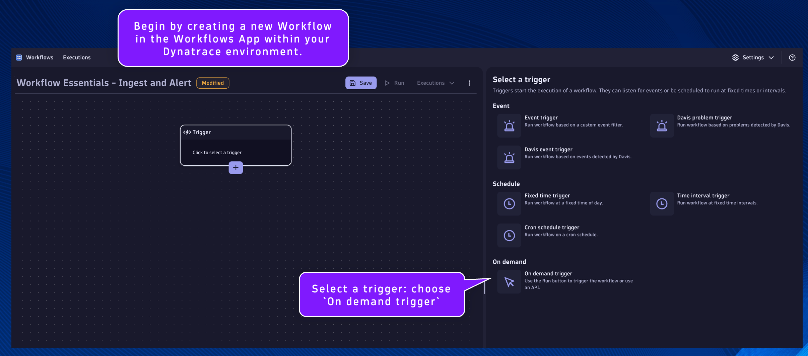
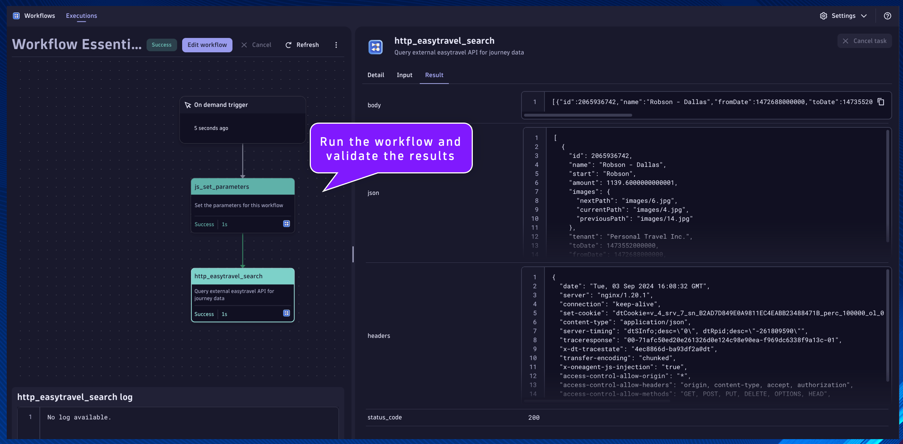
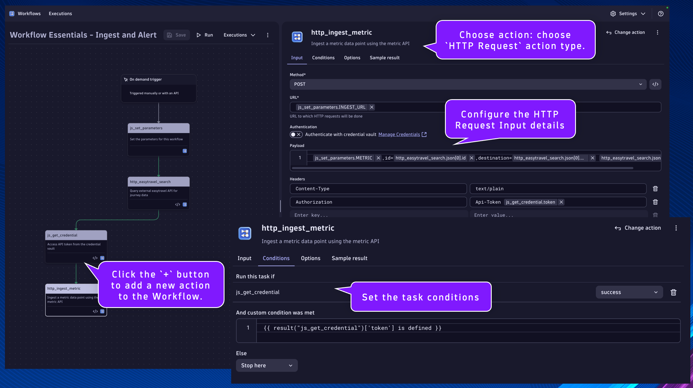

Ingest and Alert#
Goal: Retrieve data from an external system and ingest it as a metric. If the value crosses a configured threshold, then generate an event/alert.
- Credential Vault
- Access an API token from the Credential Vault using the Dynatrace SDK
- Metric Ingest
- Retrieve data from an external system using HTTP GET
- Ingest retrieved data point using the Dynatrace API with API token (not optimal)
- Ingest retrieved data point using the Dynatrace SDK (optimal)
- Event Ingest
- Query ingested metric data point using DQL
- Evaluate metric value against a threshold
- If the threshold is breached, generate an event using the Dynatrace SDK
Set Workflow Parameters#
Begin by creating a new Workflow in the Workflows App within your Dynatrace environment.
Remember to save progress often!
Select a trigger: choose On demand trigger

Click the + button to add a new action to the Workflow.

Choose action: choose Run JavaScript action type.
js_set_parameters#
Name:
js_set_parameters
Set the parameters for this workflow
This will be the task/action that defines the parameters/variables that will be used by subsequent tasks and returns them in the result. By setting the parameters as nested attribute key:value pairs within a single variable, as additional parameters are needed they can easily be added without modifying any other code.
Set the task name and description respectively.
Paste the following code snippet into the action Input:
export default async function () {
let PARAMETERS = {
// EASYTRAVEL_URL - the URL to the easytravel rest API to search for journeys and receive JSON payload
EASYTRAVEL_URL: "https://raw.githubusercontent.com/dynatrace-wwse/enablement-workflow-essentials/refs/heads/main/assets/app-data/easytravel_journey.json", // i.e. EASYTRAVEL_URL: "https://raw.githubusercontent.com/dynatrace-wwse/enablement-workflow-essentials/refs/heads/main/assets/app-data/easytravel_journey.json"
// METRIC - the unique metric id to ingest a data point for the easytravel journey amount
METRIC: "custom.workflow_essentials.easytravel.journey_amount", // i.e. METRIC: "custom.workflow_essentials.easytravel.journey_amount"
// CREDENTIAL - the credential vault entity ID that holds the Dynatrace API token value with metrics.ingest scope
CREDENTIAL: "", // i.e. CREDENTIAL: "CREDENTIALS_VAULT-123ABCF8F36FD"
// INGEST_URL - the URL of the dynatrace metric ingest API endpoint
INGEST_URL: "https://<tenant-id>.live.dynatrace.com/api/v2/metrics/ingest", // i.e. INGEST_URL: "https://abc123.live.dynatrace.com/api/v2/metrics/ingest"
// THRESHOLD - the threshold amount to trigger an alert event
THRESHOLD: 500, // i.e. THRESHOLD: 500; trigger an alert event if the average journey amount is above 500.00
}
return PARAMETERS;
}
Set the value of the missing variables:
- CREDENTIAL:
- Use the credential vault entry ID from the Workflow Essentials - Config Generator workflow execution
- INGEST_URL:
- Replace
<tenant-id>with your Dynatrace environment ID, i.e.abc123
- Replace
Query External Data#
http_easytravel_search#
Name:
http_easytravel_search
Query external easytravel API for journey data
This will be the task/action that queries external data from an api endpoint that contains our metric data point.
Locate the js_set_parameters task.
Click the + button to add a new action to the Workflow.
Choose action: choose HTTP Request action type.
Set the task name and description respectively.
Configure the HTTP Request action Input:
Method:
GET
URL:
{{ result("js_set_parameters")['EASYTRAVEL_URL'] }}
Headers:
accept application/json
Error Handling:
Fail on certain HTTP response codes [Enabled]
HTTP error codes:
400-599
Click on the task's Conditions tab. Set the Run this task if: js_set_parameters is success
Additionally, we only want this task to run if the EASYTRAVEL_URL parameter is defined in the previous task. We can access the result using a Jinja expression:
1. {{ result("task_name") }}
2. {{ result("task_name")['result_attribute_name'] }}
3. {{ result("task_name")['result_attribute_name'] condition expression }}
Expression Reference Documentation
Set the And custom condition was met:
{{ result("js_set_parameters")['EASYTRAVEL_URL'] is defined }}

Run the workflow and validate the results

Credential Vault with Dynatrace SDK#
js_get_credential#
Name:
js_get_credential
Access API token from the credential vault
This will be the task/action that uses the Dynatrace SDK to retrieve a credential from the vault. Confidential data and parameters should be stored in the credential vault and not statically defined in the code.
Locate the http_easytravel_search task.
Click the + button to add a new action to the Workflow.
Choose action: choose Run JavaScript action type.
Set the task name and description respectively.
Paste the following code snippet into the action Input:
import { execution } from '@dynatrace-sdk/automation-utils';
import { credentialVaultClient } from '@dynatrace-sdk/client-classic-environment-v2';
const PARAMETERS_TASK = 'js_set_parameters';
export default async function ({ execution_id }) {
// get parameters from previous tasks
// execution
const ex = await execution(execution_id);
// parameters
const parameters = await ex.result(PARAMETERS_TASK);
// CREDENTIAL
const CREDENTIAL = parameters['CREDENTIAL'];
// get the credentials from the credential vault using the SDK
// https://developer.dynatrace.com/develop/sdks/client-classic-environment-v2/#getcredentialsdetails
const data = (await credentialVaultClient.getCredentialsDetails({id: CREDENTIAL}));
const token = data['token'];
return { token: token };
}
Click on the task's Conditions tab. Set the Run this task if: http_easytravel_search is success
Additionally, we only want this task to run if the status_code is 200 and the response is not empty in the previous task.
Set the And custom condition was met:
{{ result("http_easytravel_search")["status_code"] == 200 and result("http_easytravel_search")["json"] | length > 0 }}

Metric Ingest - Dynatrace API with Token#
http_ingest_metric#
Name:
http_ingest_metric
Ingest a metric data point using the metric API
This will be the task/action that ingests a metric data point from the previous task using an HTTP call to the metric ingest API with a token from the credential vault.
Locate the js_get_credential task.
Click the + button to add a new action to the Workflow.
Choose action: choose HTTP Request action type.
Set the task name and description respectively.
Configure the HTTP Request action Input:
Method:
POST
URL:
{{ result("js_set_parameters")['INGEST_URL'] }}
Payload:
{{ result("js_set_parameters")["METRIC"] }},id={{ result("http_easytravel_search")["json"][0]["id"] }},destination={{ result("http_easytravel_search")["json"][0]["destination"] }} {{ result("http_easytravel_search")["json"][0]["amount"] }}
Headers:
Content-Type text/plain
Authorization Api-Token {{ result("js_get_credential")["token"] }}
Error Handling:
Fail on certain HTTP response codes [Enabled]
HTTP error codes:
400-599
Click on the task's Conditions tab. Set the Run this task if: js_get_credential is success
Additionally, we only want this task to run if the token parameter is defined in the previous task.
Set the And custom condition was met:
{{ result("js_get_credential")['token'] is defined }}

Run the workflow and validate the results

Metric Ingest - Dynatrace SDK#
js_ingest_metric_sdk#
Name:
js_ingest_metric_sdk
Ingest a metric data point using the SDK
This will be the task/action that uses the Dynatrace SDK to ingest a metric data point. The SDK makes it significantly easier to perform this function than using the API and authorization token.
Locate the http_easytravel_search task.
Click the + button to add a new action to the Workflow.
Choose action: choose Run JavaScript action type.
Set the task name and description respectively.
Paste the following code snippet into the action Input:
import { execution } from '@dynatrace-sdk/automation-utils';
import { metricsClient } from "@dynatrace-sdk/client-classic-environment-v2";
const PARAMETERS_TASK = 'js_set_parameters';
const SEARCH_TASK = 'http_easytravel_search';
export default async function ({ execution_id }) {
// get parameters from previous tasks
// execution
const ex = await execution(execution_id);
// parameters
const parameters = await ex.result(PARAMETERS_TASK);
const METRIC = parameters['METRIC'];
// previous results
const search_results = await ex.result(SEARCH_TASK);
const id = search_results['json'][0]['id'];
const amount = search_results['json'][0]['amount'];
const destination = search_results['json'][0]['destination'];
// build the line_protocol string to ingest the metric data point
const line_protocol = METRIC + ',id=' + id + ',destination=' + destination + ' ' + amount;
// (optional) log the line_protocol value
console.log(line_protocol);
// ingest the metric data point using the SDK
// https://developer.dynatrace.com/develop/sdks/client-classic-environment-v2/#ingest-1
const data = await metricsClient.ingest({
body: line_protocol,
});
return { data: data };
}
Click on the task's Conditions tab. Set the Run this task if: http_easytravel_search is success
Additionally, we only want this task to run if the status_code is 200 and the response is not empty in the previous task.
Set the And custom condition was met:
{{ result("http_easytravel_search")["status_code"] == 200 and result("http_easytravel_search")["json"] | length > 0 }}

Run the workflow and validate the results

Event Ingest - Dynatrace SDK#
js_wait_30_seconds#
Name:
js_wait_30_seconds
Wait 30 seconds for data to be processed
This will be the task/action that pauses workflow execution for 30 seconds with a timed wait using JS code. This method can be useful when you need to pause task execution within your JS code task. Additionally, you can configure any task to wait up to 60 seconds in the Options tab.
When data is ingested into the Dynatrace platform, it may not be available immediately. To avoid a query from returning an empty result set, we'll wait 30 seconds for the data to be processed before continuing.
Locate the http_ingest_metric task.
Click the + button to add a new action to the Workflow.
Choose action: choose Run JavaScript action type.
Set the task name and description respectively.
Locate the js_ingest_metric_sdk task.
Click and hold the + button, then drag to connect this task to the js_wait_30_seconds task.
Paste the following code snippet into the action Input:
export default async function () {
const sleep = async (waitTime: number) =>
new Promise(resolve =>
setTimeout(resolve, waitTime));
const waitTime = async () => {
// 30,000ms = 30 seconds to sleep
await sleep(30000);
console.log("Finished Waiting");
}
console.log("Waiting 30 Seconds");
waitTime();
}
Click on the task's Conditions tab. Set the Run this task if: js_ingest_metric_sdk is success and http_ingest_metric is success

js_dql_query_alert#
Name:
js_dql_query_alert
Query metric data point and generate an alert via SDK
This will be the task/action that uses the Dynatrace SDK to execute a DQL query to retrieve a metric data point and trigger an alert event if the value crosses a threshold. Using the Dynatrace SDK is an alternative method for running a DQL query within workflows. When a Davis problem event is triggered using the Dynatrace SDK within workflows, the event is stored in Grail and the problem is available in the Problems app.
Locate the js_wait_30_seconds task.
Click the + button to add a new action to the Workflow.
Choose action: choose Run JavaScript action type.
Paste the following code snippet into the action Input:
import { execution } from '@dynatrace-sdk/automation-utils';
import { queryExecutionClient } from "@dynatrace-sdk/client-query";
import { eventsClient, EventIngestEventType } from "@dynatrace-sdk/client-classic-environment-v2";
const PARAMETERS_TASK = 'js_set_parameters';
const SEARCH_TASK = 'http_easytravel_search';
export default async function ({ execution_id }) {
// get parameters from previous tasks
// execution
const ex = await execution(execution_id);
// parameters
const parameters = await ex.result(PARAMETERS_TASK);
const METRIC = parameters['METRIC'];
const THRESHOLD = parameters['THRESHOLD'];
// previous results
const search_results = await ex.result(SEARCH_TASK);
const destination = search_results['json'][0]['destination'];
// build the DQL query for the metric
// query the metric value for the last 5 minutes
// https://developer.dynatrace.com/develop/sdks/client-query/#queryexecute
const timeout = 60;
const query = 'timeseries journey_amount = avg(' + METRIC + '), by: {destination}, from: now()-5m\
| filter destination == "' + destination + '"\
| summarize avg_amount = avg(arrayAvg(journey_amount))';
const query_response = await queryExecutionClient.queryExecute({ body: { query, requestTimeoutMilliseconds: timeout * 1000, fetchTimeoutSeconds: timeout } });
// check if the query result is empty (unexpectedly)
if(query_response.result.records.length == 0) {
console.log("Query returned an empty result unexpectedly!");
return query_response.result;
}
// capture the average journey amount from query response
const avg_amount = parseFloat(query_response.result.records[0]['avg_amount']);
// check if the avg amount value is above the threshold parameter, if true then raise alert event
if(avg_amount > THRESHOLD) {
// https://developer.dynatrace.com/develop/sdks/client-classic-environment-v2/#createevent
const event_response = await eventsClient.createEvent({
// https://developer.dynatrace.com/develop/sdks/client-classic-environment-v2/#eventingest
body : {
eventType: EventIngestEventType.CustomAlert, // https://developer.dynatrace.com/develop/sdks/client-classic-environment-v2/#eventingesteventtype
title: 'EasyTravel Journey Amount [ ' + avg_amount + ' ]',
timeout: 5,
properties: {
'amount': avg_amount,
'threshold' : THRESHOLD,
}
}
});
// validate that the alert event was created, return the correlationId and details
if(event_response.eventIngestResults[0].status == "OK") {
return {
amount: avg_amount,
threshold: THRESHOLD,
correlationId: event_response.eventIngestResults[0].correlationId
}
} else {
return {
amount: avg_amount,
threshold: THRESHOLD,
correlationId: "ERROR"
}
}
}
}
Click on the task's Conditions tab. Set the Run this task if: js_wait_30_seconds is success

Run the workflow and validate the results

After validating that the workflow execution was successful and the js_dql_query_alert result has a populated correlationId value, open the Problems (or Problems (Classic)) app and view the open problem alert.

Continue#
In the next section, we'll set up third party integration.